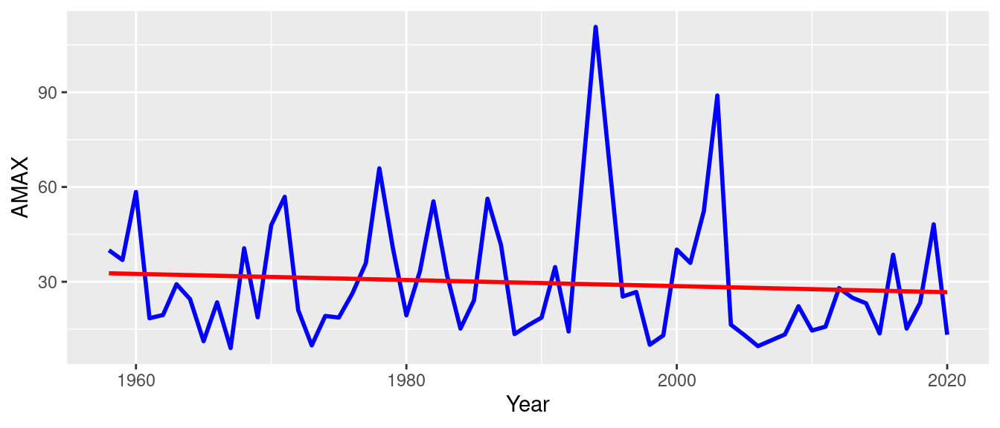

library(dplyr)
library(tidyr)
library(ggplot2)
library(lubridate)
library(trend)
library(extRemes)Flood Frequency Analysis (FFA) with Block-Maxima
1 Libraries
2 Data import
Let’s consider the formatted daily streamflow data file for the target catchment. We can read the data into a data frame using the read.csv() function. We will also set the column names using the col.names argument, and use the lubridate library to prepare a time serie.
library(lubridate)
filename <- "./data/discharge.csv"
Qdata <- read.csv(filename, col.names = c("Year", "Month", "Day", "Q"))
# construct time serie
Qdata$Date <- paste(Qdata[["Year"]], Qdata[["Month"]], Qdata[["Day"]], sep = "-")
Qdata$Date <- ymd(Qdata$Date)
# final time serie
Qdata <- Qdata[, c("Date", "Q")]The output is a data frame (or a matrix) with 22799 rows and 2 columns.
| Date | Q | |
|---|---|---|
| 22794 | 2020-12-26 | 2.326204 |
| 22795 | 2020-12-27 | 2.173519 |
| 22796 | 2020-12-28 | 2.193727 |
| 22797 | 2020-12-29 | 2.090440 |
| 22798 | 2020-12-30 | 1.966944 |
| 22799 | 2020-12-31 | 1.854676 |
Note
We can display the structure of the data frame using the str() function.
str(Qdata)'data.frame': 22799 obs. of 2 variables:
$ Date: Date, format: "1958-08-01" "1958-08-02" ...
$ Q : num 0.236 0.184 0.144 0.144 0.144 ...3 Extreme events sampling
3.1 The block maxima approach
The Block-Maxima Approach (Gumbel, 1958), consists of sampling the maximum streamflow value for each year (or block). This method is straightforward to implement and reduce the possiblity of serial dependence.

3.2 Exract annual maximum floods (AMF) from the daily streamflow serie
1. To extract annual maximum floods (AMF) from the streamflow series, we need to define a function that returns the maximum value of a block of data:
extract_annual_max <- function(df) {
df %>%
mutate(Year = year(Date)) %>% # extract year from Date
group_by(Year) %>%
filter(Q == max(Q)) %>% # keep only max flow per year
slice(1) %>% # in case of ties, keep first max
ungroup() %>%
select(Year, Date, AMAX = Q)
}2. Now, we apply the function to the data to extract AMF for each year:
extractedAMF <- extract_annual_max(Qdata)| Year | Date | AMAX |
|---|---|---|
| 1958 | 1958-12-20 | 39.96984 |
| 1959 | 1959-03-07 | 36.89593 |
| 1960 | 1960-10-06 | 58.41780 |
| 1961 | 1961-12-11 | 18.44796 |
| 1962 | 1962-03-05 | 19.47185 |
| 1963 | 1963-04-11 | 29.21002 |
3.3 Display sampled events
Now, we overlap the extracted Annual Maximum Flow with the original daily discharge time serie to visualize the sampling process. We use the functions from the dplyr and ggplot2 library to create the plot.
Show the code
amf.plot <- ggplot() +
geom_line(data = Qdata, aes(x = Date, y = Q), color = "steelblue", size = 0.7, alpha = 0.8) +
geom_point(data = extractedAMF, aes(x = Date, y = AMAX), color = "red", size = 1.2) +
labs(x = "Date", y = "Discharge (Q)") +
theme_minimal(base_size = 13) +
theme(
axis.title = element_text(size = 12, face = "bold"),
axis.text = element_text(size = 12, color = "black")
)
print(amf.plot)
4 Autocorrelation testing
Recall
The extractedAMF variable used in the following code blocs is created previously in the Sampling Events section The acf function is a R-base function, no installation needed
4.1 What is autocorrelation?
Autocorrelation (or autocovariance) refers to the fact that in a time or spatial serie, the measurement of a phenomenon at time t can be correlated with previous measurements (at time t-1, t-2, t-3, etc.) or with subsequent measurements (at t+1, t+2, t+3, …). An autocorrelated series is thus correlated with itself, with a given lag (please refer here for more details).
To assess autocorrelation, two methods will be used in this lab
🔍 Correlogram:
- Visualization of correlation coefficients between the serie and its lags
- Based on the autocorrelation function (ACF)
- Helps identify the presence and extent of dependencies over time
📊 Wald-Wolfowitz Test (Wald & Wolfowitz, 1940):
- Non-parametric to assess the randomness of a time serie
- Used to detect the absence of randomness in the serie
- Null hypothesis: The sequence of observations is random
4.1.1 Correlogram
If you execute the above given chunk, it generates the Figure 3 as output:
Show the code
# compute autocorrelation lag
bacf <- acf(extractedAMF$AMAX, plot = FALSE)
bacfdf <- with(bacf, data.frame(lag, acf))
# confidence interval
n <- length(extractedAMF$AMAX)
conf_limit <- 1.96 / sqrt(n)
# correlogram
library(ggplot2)
ggplot(data = bacfdf, mapping = aes(x = lag, y = acf)) +
geom_hline(aes(yintercept = 0)) +
geom_bar(stat = "identity", position = "identity", width = .2) +
geom_hline(yintercept = conf_limit, linetype = "dashed", color = "red") +
geom_hline(yintercept = -conf_limit, linetype = "dashed", color = "red") +
labs(y = "ACF", x = "Lag") +
theme_minimal() +
theme(
axis.title = element_text(size = 10, face = "bold", family = "Times"),
axis.text = element_text(size = 10, color = "black", family = "Times")
)
Interpretation
Looking at the 95% confidence interval bounds in the correlogram, we can see that from lag -1 to lag-16, the autocorrelation is only significant at lag-8, so we can conclude that the maximum annual flood is a random variable.
4.1.2 Wald-Wolfowitz (WW) test
In the chunk below, we use the ww.test(...) function from {trend} package to perform the WW test at the 0.05 significance level, to test the hypothesis that the maximum annual flood is a random variable.
wwtest <- trend::ww.test(extractedAMF$AMAX)
print(wwtest)
Wald-Wolfowitz test for independence and stationarity
data: extractedAMF$AMAX
z = 0.73738, n = 60, p-value = 0.4609
alternative hypothesis: The series is significantly different from
independence and stationarity
Interpretation
p.value = 0.4609: indicates that the data series appears to be consistent with the assumption of independence and stationarity (i.e., there is not enough evidence to reject the null hypothesis of randomness).
5 Trend detection
5.1 Non-parametric methods
5.1.1 The Mann-Kendall (MK) test
The MK test’s null hypothesis (H0) assumes no trend in the data (Mann, 1945; Kendall, 1975). Recommended by the World Meteorological Organization (WMO), it is simple and requires no assumptions about data distribution, which is particularly advantageous for hydroclimatic series that are rarely normally distributed. Additionally, outlier values have very little influence on the results. The Mann-Kendall test statistic S is defined as:
S = \sum_{i=1}^{n-1} \sum_{j=i+1}^{n} \text{sgn}(x_j - x_i) \tag{1}
The sign function sgn()) is given by:
\text{sgn}(x_j - x_i) = \begin{cases} +1 & \text{if } (x_j - x_i) > 0 \\ 0 & \text{if } (x_j - x_i) = 0 \\ -1 & \text{if } (x_j - x_i) < 0 \end{cases} \tag{2}
where x_i and x_j are values of the variable at time i and j, respectively, and n is the total number of observations.
A significance level (commonly \alpha = 0.05) and the trend slope indicating the direction and magnitude of the trend are key characteristics of the Mann-Kendall test. If n > 8, the test statistic S approximates a normal distribution. In this case, the mean of S is zero and its variance is:
\text{var}(S) = \frac{n(n - 1)(2n + 5)}{18} \tag{3}
The standardized test statistic Z, which indicates the direction of the trend, is calculated as:
Z = \begin{cases} \frac{S - 1}{\sqrt{\text{var}(S)}} & \text{if } S > 0 \\ 0 & \text{if } S = 0 \\ \frac{S + 1}{\sqrt{\text{var}(S)}} & \text{if } S < 0 \end{cases} \tag{4}
The null hypothesis H_0 (no trend) is rejected if |Z| > 1.96 at the 95% confidence level.
- A positive trend is significant if Z > 1.96
- A negative trend is significant if Z < -1.96
We use the mk.test(...) function from {trend} package to perform the MK test at the 0.05 significance level to test the hypothesis that there is no stationarity in the maximum annual floods serie.
Note
Non-Stationarity (NS) refers to changes in statistical properties over time.
mktest <- trend::mk.test(extractedAMF$AMAX)
print(mktest)
Mann-Kendall trend test
data: extractedAMF$AMAX
z = -1.231, n = 60, p-value = 0.2183
alternative hypothesis: true S is not equal to 0
sample estimates:
S varS tau
-194.0000000 24581.3333333 -0.1096665
Interpretation
p.value = 0.2183: there is not enough statistical evidence to conclude that a significant trend exists in the AMF serie.
tau = -0.1096665: Kendall’s Tau is a non-parametric measure of trend strength, ranging from -1 (perfect decreasing trend) to +1 (perfect increasing trend). A value near 0 indicates a weak or no trend.
z = -1.231: the calculated test statistic (a z-score). A negative value suggests a potential decreasing trend, while a positive value suggests a potential increasing trend.
Figure 4 shows the evolution of the AMF over time and a red line indicating the overall linear trend. The Mann-Kendall test result (p-value = 0.2183) indicates that this visually apparent (decreasing) linear trend is not statistically significant at the 0.05 significance level.
Show the code
lineplot <- ggplot(extractedAMF, aes(Year, AMAX)) +
geom_line(color = "blue", linewidth = 1) +
geom_smooth(color = "red", linewidth = 1, method = "lm", se = F)
print(lineplot)

5.1.2 Sen’s slope estimator
The non-parametric method of Sen (1968), also referred to as the Theil–Sen estimator, is commonly combined with the Mann-Kendall test to estimate the slope (\beta) of the of a trend. Sen’s algorithm looks at every pair of data points, calculates the slope between them, then uses the the median of all those slopes as the estimated trend.
\beta = \text{median} \left( \frac{x_j - x_i}{j - i} \right), \quad , ∀\quad j > i \tag{5}
To express the Sen’s slope as a percentage change over the period, it can be normalized by the mean:
\%\beta = \left( N \cdot \frac{\beta}{\bar{x}} \right) \times 100 \tag{6} where \%\beta is the relative trend rate over the period, and \bar{x} represents the mean value of the variable across the period, N is the number of data points (i.e., the length of period).
The Sen’s slope can be easily computed using the sens.slope(...) function from the {trend} package, as in the chunk below:
Sen slope
Slope = -0.1187375 : the median trend is slightly negative, suggesting a weak decline of -0.11 \quad mm/year.
p-value = 0.2183: this negative trend is not statistically significant.
# compute Sen's slope and intercept
senslope <- trend::sens.slope(x = extractedAMF$AMAX)
print(senslope)
Sen's slope
data: extractedAMF$AMAX
z = -1.231, n = 60, p-value = 0.2183
alternative hypothesis: true z is not equal to 0
95 percent confidence interval:
-0.3115676 0.0768529
sample estimates:
Sen's slope
-0.1187375 Yet, the sens.slope(...) function returns the absolute slope (i.e., the median change per time unit). It is more meaningful to express the trend as a relative percentage change over the time period.
To do this, we define a wrapper function that calculates the Sen’s slope and then converts it into a relative trend rate.
Show the code
sens_slope_percent <- function(x, time_step = NULL) {
#' Compute Sen's slope as a percentage change over the full time period
#' @param x A numeric vector of observations
#' @param time_step Optional (e.g., year) used for display purpose only
#' @return Relative percent change over the period
require(trend)
N <- length(x)
result <- sens.slope(x)
slope <- result$estimates # Absolute slope (per time unit)
p_val <- result$p.value # p-value for trend test
mean_val <- mean(x, na.rm = TRUE)
percent_change <- (N * slope) / mean_val * 100
cat("Absolute Sen's slope: ", round(slope, 4), "\n", sep = "")
cat("P-value: ", format.pval(p_val, digits = 4), "\n", sep = "")
cat("Relative trend rate: ", round(percent_change, 2), "%", "\n", sep = "")
}Now, we can compute the relative Sen’s slope for the annual maximum flow data:
# compute Sen's slope as a percentage change
sens_slope_percent(extractedAMF$AMAX, time_step = "year")Absolute Sen's slope: -0.1187
P-value: 0.2183
Relative trend rate: -23.97%
Relative Sen’s slope
The annual maximum flow shows a decreasing trend of −24% relative to its long-term average.
5.2 Parametric methods
Parametric methods rely on the adjustment of distributions adapted to extremes event (e.g., Generalized Extreme Value, Generalized Pareto Distribution, etc.) in a non-stationary (NS) context.
Note
NS is taken into account by allowing the models parameters to vary as a linear function of time or other covariates. Here, the location parameter (μ) will be expressed as a linear function of time, denoted as μ(t), leaving the others parameters constant.
6 Flood frequency analysis (FFA)
6.1 Probability distributions
We will compare two probability distributions adapted to the Block-Maxima Framework: the Generalized Extreme Value (GEV) and the Gumbel probability distributions.
GEV distribution
The Generalized Extreme Value (GEV) distribution is a family of continuous probability distributions developed to combine the Gumbel, Fréchet, and Weibull distributions. According to the Extreme Value Theorem, the GEV distribution is the only possible limit distribution for properly normalized sequences of maxima of independent and identically distributed random variables. The cumulative distribution function (CDF) of the GEV distribution is given by:
F(x; \mu, \alpha, \xi) = \exp\left\{ -\left[ 1 + \xi \left( \frac{x - \mu}{\alpha} \right) \right]^{-1/\xi} \right\} \tag{7}
for 1 + \xi (x - \mu)/\alpha > 0, where, \mu is the location parameter, \alpha > 0 is the scale parameter, and \xi is the shape parameter.
The shape parameter \xi determines the type of extreme value distribution:
- If \xi > 0, the distribution is a Fréchet type.
- If \xi < 0, the distribution is a Weibull type.
- If \xi = 0, the distribution is a Gumbel type.
Gumbel distribution
The Gumbel distribution is a special case of the GEV distribution when the shape parameter \xi = 0. It is often used to model the distribution of the maximum (or minimum) of a number of samples of various distributions. The cumulative distribution function (CDF) of the Gumbel distribution is given by:
F(x; \mu, \alpha) = \exp\left\{ -\exp\left[ -\frac{x - \mu}{\alpha} \right] \right\} \tag{8} where \mu is the location parameter, \alpha > 0 is the scale parameter, and x is the variable
6.2 Models fitting
We will employ the Generalized Maximum Likelihood Estimation (GMLE) method to fit probability distributions to our data. The {extRemes} package offers the function fevd(..), which enables fitting a range of probability distributions — such as the GEV, Gumbel distributions — to a given dataset using three distinct fitting methods: L-moments, Maximum Likelihood Estimation (MLE), and GMLE.
Why the
GML method?
The GMLE method use a prior distribution to constrain the GEVC shape parameter within a reasonnable interval . This prior helps avoid unrealistic or extreme negative values of the shape parameter, leading to more reliable and stable parameter estimates when data are limited (See Martins & Stedinger (2000) for more details).
The advantage of using GMLE and MLE over the L-moments method is that L-moments are limited in their ability to accommodate non-stationary processes. In contrast, GMLE and MLE can directly incorporate covariates or time trends, making them more flexible and suitable for analyzing data where the underlying distribution may change over time or as a function of external variables. This flexibility is especially important for trend detection.
6.3 Model selection
To select the best probability distribution, we will use the AIC and AIC criteria. The model with the lowest AIC and BIC values is the best-suited model. AIC tends to favor models with better fit, even if more complex, while BIC favors simpler models, especially as sample size grows. Combining these these performance metrics enhances the efficiency of model selection.
Joint use of AIC and BIC
- if both criteria select the same model, it is strongly preferred
- if not, the choice depends on whether your goal is predictive accuracy (AIC) or model simplicity (BIC)
AIC (Akaike Information Criterion)
The AIC balances the goodness of fit of the model with the number of parameters used by the model. This mean that it rewards models that fit the data well but also penalizes models that use too many parameters. The formula for AIC is:
\text{AIC} = 2k - 2\ln(\hat{L}) \tag{9} where k is the number of parameters in the model, \hat{L} is the maximum value of the likelihood function for the model.
BIC (Bayesian Information Criterion)
BIC penalizes model complexity more heavily than AIC, especially for larger sample sizes. This means BIC tends to favor simpler models compared to AIC. The formula for BIC is:
\text{BIC} = k\ln(n) - 2\ln(\hat{L}) \tag{10}
where: k is the number of parameters in the model, n is the number of data points, and \hat{L} is the maximum value of the likelihood function for the model.
6.4 Perform FFA
6.4.1 Setup utils
To pretty-print the summary of our models’ fitting, we will create a custom function that will take the fitted model as an argument, extract and format key components of the fiited object, and print the output:
pretty_fit_summary = function(fitobj, model) {
#' Pretty print summary of a extreme value model fit
#'
#' @param fitobj Fitted model object from extRemes::fevd()
#' @param model Character string describing the model (e.g., "GEV")
cat("===", model, " Fit Summary ===\n\n")
# Estimated Parameters
cat("Estimated Parameters:\n")
params = fitobj$results$par
print(round(params, 4))
# Log-likelihood, AIC, and BIC
look = summary(fitobj, silent=TRUE)
cat("\nModel Fit Criteria:\n")
cat(sprintf("LogLik: %.2f\n", look$nllh))
cat(sprintf("AIC: %.2f\n", look$AIC))
cat(sprintf("BIC: %.2f\n", look$BIC))
# return the AIC and BIC values for further comparison
return(data.frame(Model=model, Crit=c("AIC", "BIC"), Value=c(look$AIC, look$BIC)))
}6.4.2 Distributions fitting
6.4.2.1 Stationary context
What about the parameters?
location = 19.4868: is the central tendency (μ) of the GEV distribution. It defines the central position of the distribution and serves as a baseline around which extreme values are distributed.
scale = 9.932: reflects the spread or variability of the extreme values. In our case, the AMF distribution has moderate spread around the shifting central value μ(t).
shape = 0.3576: this positive shape parameter implies a Fréchet-type (heavy-tailed) distribution. This means there is greater probability of very large flood events compared to a Gumbel (shape = 0) or Weibull (shape < 0) distribution.
The chunk below use the {extRemes} library to fit the GEV distribution to the Annual Maximum Floods extracted earlier.
# fit the GEV distribution to the AMF
library(extRemes)
gevfit = fevd(x=extractedAMF$AMAX, type="GEV", method="GMLE")Now, we will print the results of the fit, using the pretty_fit_summary() function we have defined above. This will show the AIC and BIC values, as well as the estimated parameters of the fitted GEV distribution.
# show fitting sumary
gevfit_res = pretty_fit_summary(gevfit, "GEV")=== GEV Fit Summary ===
Estimated Parameters:
location scale shape
19.4868 9.8254 0.3818
Model Fit Criteria:
LogLik: 244.65
AIC: 495.31
BIC: 501.59Finally, we show in Figure 5, the diagnostics from the GEV distribution fitted to the Annual Maximum Floods: density plot of empirical data and fitted GEV df (top-left), and quantiles from a sample drawn from the fitted GEV against the empirical data quantiles with 95% confidence bands (top-right).
# show diagnostic plots of the GEV distribution fitting
par(mfrow=c(1,2))
plot(gevfit, type="density", main="(a) Density plot", ylim=c(0, .043))
plot(gevfit, type="qq2", main=NULL)
title(main="(b) Q-Q plot")
The chunk below use the {extRemes} library to fit the Gumbel distribution to the Annual Maximum Floods extracted earlier.
# fit the Gumbel distribution to the AMF
gumfit = fevd(x=extractedAMF$AMAX, type="Gumbel", method="GMLE")Now, we will print the results of the fit, using the pretty_fit_summary() function we have defined previously. This will show the AIC and BIC values, as well as the estimated parameters of the fitted Gumbel distribution.
# show fitting sumary
gumfit_res = pretty_fit_summary(gumfit, "Gumbel")=== Gumbel Fit Summary ===
Estimated Parameters:
location scale
21.7606 12.3003
Model Fit Criteria:
LogLik: 249.40
AIC: 502.80
BIC: 506.99Finally, we show in Figure 6, the diagnostics from the Gumbel distribution fitted to the Annual Maximum Floods:
# show diagnostic plots of the GEV distribution fitting
par(mfrow=c(1,2))
plot(gumfit, type="density", main="(a) Density plot", ylim=c(0, .035))
plot(gumfit, type="qq2", main=NULL)
title(main="(b) Q-Q plot")
As mentionned previously, the model with the lowest AIC and BIC values is the best-suited model. The pretty_fit_summary() function we have defined previously return a data.frame of AIC and BIC values for each distribution. Lets compare these values to select the best-suited distribution for the next steps.
print(gevfit_res)
print(gumfit_res)| Model | Crit | Value |
|---|---|---|
| GEV | AIC | 495.3076 |
| GEV | BIC | 501.5907 |
| Model | Crit | Value |
|---|---|---|
| Gumbel | AIC | 502.7966 |
| Gumbel | BIC | 506.9853 |
6.4.2.2 Parametric trend-detection
When covariates are to be incorporated into EVA, a common approach to account for non-stationary is to incorporate covariates within the parameters of the distributions in a regression-like manner. To perform parametric trend detection, we model the location parameter (μ) as a function of time, transforming the models into non-stationary distributions. The location parameter of the non-stationnary GEV and Gumbel is computed as follow:
\mu (t) = \mu 0 + \mu 1·t \tag{11}
where \mu (t) is the time-dependant location parameter, t is the time index, \mu 0 is the intercept, and \mu 1 is the slope.
Trend?
The decision to adopt a non-stationary (or more complex) model in FFA depends on whether the temporal trend is statistically significant.
The deviance test, based on likelihood ratio statistic (Coles, 2001), offers a formal approach to test this hypothesis by comparing the stationary and non-stationary models.
6.4.2.2.1 Creating covariate
Note
As mentionned above, we use time index to account for trend in the AMF serie. We create in this chunk above a new column, TimeIndex, to be used as covariate.
# add time index to use for non-stationary context fitting
extractedAMF[["TimeIndex"]] = 1:nrow(extractedAMF)
head(tibble(extractedAMF), 5)# A tibble: 5 × 4
Year Date AMAX TimeIndex
<dbl> <date> <dbl> <int>
1 1958 1958-12-20 40.0 1
2 1959 1959-03-07 36.9 2
3 1960 1960-10-06 58.4 3
4 1961 1961-12-11 18.4 4
5 1962 1962-03-05 19.5 56.4.2.2.2 Non-Stationary GEV fitting
The chunk below use the {extRemes} library to fit the Non-Stationary GEV (NS-GEV) distribution to the Annual Maximum Floods extracted earlier.
# fit the GEV distribution to the AMF
extractedAMF = data.frame(extractedAMF)
nsgevfit = fevd(x=AMAX, location.fun=~TimeIndex, data=extractedAMF, type="GEV", method="GMLE")Now, we will print the results of the fit, using the pretty_fit_summary() function we have defined above. This will show the AIC and BIC values, as well as the estimated parameters of the fitted NS-GEV distribution.
# show fitting sumary
nsgevfit_res = pretty_fit_summary(nsgevfit, "GEV")=== GEV Fit Summary ===
Estimated Parameters:
mu0 mu1 scale shape
20.5045 -0.0276 9.9322 0.3576
Model Fit Criteria:
LogLik: 244.55
AIC: 497.11
BIC: 505.48
What about the parameters?
mu0 = μ0 = 20.5045:is theinterceptof the time-varying location parameter. It represents the baseline magnitude of the annual maximum flood (AMF) at the starting point of the time serie.mu1 = μ1 = –0.0276:is theslopeof the location parameter with respect to time. It indicates a decreasing trend in the location (i.e., central tendency) of the AMF over time. Specifically, for each unit increase in time (i.e., each year), the location parameter decreases by 0.0276\,mm. This suggests that the typical magnitude of extreme floods has been gradually declining over the observation period.
Finally, we show in Figure 7, the diagnostics from the NS-GEV distribution fitted to the Annual Maximum Floods: density plot of empirical data and fitted GEV df (top-left), quantiles from a sample drawn from the fitted GEV against the empirical data quantiles with 95% confidence bands (top-right).
# show diagnostic plots of the GEV distribution fitting
par(mfrow=c(1,2))
plot(nsgevfit, type="density", main="(a) Density plot", ylim=c(0, .4))
plot(nsgevfit, type="qq2", main=NULL)
title(main="(b) Q-Q plot")
6.4.2.2.3 Deviance test
Mathematical of the deviance test
As mentionned above, The Deviance test, or Likelihood Ratio (LR) test, compares two nested models — typically, a simpler (stationary) model and a more complex (non-stationary) model. It helps determine if introducing additional parameters (such as a time-varying location parameter in a GEV model) leads to a statistically significant improvement in model fit.
D = 2{log(ML_{NSGEV}) - log(ML_{SGEV})} \tag{12}
D represents the deviance test statistic value (D-statistic), log(ML_{NSGEV}) and log(ML_{SGEV}) are the maximised log-likelihood functions of the NSGEV and the SGEV, respectively.
log-likelihood function
The likelihood function itself measures how well a statistical model explains observed data by giving, for a set of parameters, the probability (or probability density) of observing the data under the model.
To perform the Deviance test, we can use the lr.test(...) of the {extRemes}. This function just requires the previous fitted objects of class “fevd” from the fevd(...) function:
gevfit: model with fewer parameters (stationary GEV model)nsgevfitmodel with more parameters (non-stationary GEV model)
The null hypothesis of the Deviance test is that simpler model is sufficient — i.e., no trend (e.g., the location parameter μ is constant over time). Letting c.alpha be the (1 - alpha) quantile of the chi-square distribution with degrees of freedom equal to the difference in the number of model parameters, the null hypothesis that D = 0 is rejected if D > c.alpha (i.e., in favor of model Non-Stationary GEV model).
# applying the Deviance test
lr.test(x=gevfit, y=nsgevfit, alpha=0.05, df=1)
Likelihood-ratio Test
data: extractedAMF$AMAXAMAX
Likelihood-ratio = 0.20007, chi-square critical value = 3.8415, alpha =
0.0500, Degrees of Freedom = 1.0000, p-value = 0.6547
alternative hypothesis: greater
Trend significance
There is no significant evidence that the Non-Stationary GEV model (with a time-varying location parameter) provides a better fit than the stationary model. The trend is not statistically significant (p = 0.6547).
7 Trend analysis conclusions
🔎 Trend Detection Methods Used
- Parametric:
Non-stationary GEV modelwith time-varying location parameter - Non-parametric:
Mann-Kendall test
🚫 No Significant Trend Detected
- Both methods consistently indicate no statistically significant trend in the annual maximum flow series.
- The Likelihood Ratio Test showed a high p-value (0.65), and the Mann-Kendall test similarly returned a non-significant result (p = 0.22).
✅ Modeling Implication
- The results support the use of a stationary GEV model.
- There is no strong evidence of temporal change in flood extremes over the study period.
8 Flood quantiles estimation
8.1 Stationary context
To estimate return levels for given return periods, we can use the return.level(...) from the {extRemes} package:
Note
The return level is the value expected to be exceeded on average once every T years.
# specific return periods (e.g., 10, 20 years)
rperiods = c(2, 5, 10, 20, 50, 100)
# compute return levels (with 95% confidence intervals)
rlevels = return.level(gevfit, return.period=rperiods, do.ci=TRUE)
# print results
print(rlevels)fevd(x = extractedAMF$AMAX, type = "GEV", method = "GMLE")
[1] "Normal Approx."
95% lower CI Estimate 95% upper CI
2-year return level 19.60029 23.35205 27.10382
5-year return level 31.27812 39.37944 47.48076
10-year return level 38.73868 54.51701 70.29534
20-year return level 43.75679 73.73668 103.71657
50-year return level 43.88864 107.90748 171.92631
100-year return level 35.61747 142.77898 249.94049
Note
The gevfit object is the gevfit object returned by the fevd(...) function when we have fitted a the stationary GEV model.
8.2 Non-Stationary context
In non-stationary context, since the location parameter is time-dependent, return levels have to be calculated for each year over time period. We refer to this as “effective” return levels The same return.level(...) from the {extRemes} package is used to compute "effective" return levels.
Note
The nsgevfit object is the object returned by the fevd(...) function when we have fitted a the non-stationary GEV model.
# specific return periods (e.g., 10, 20 years)
rperiods = c(2, 5, 10, 20, 50, 100)
# compute return levels (with 95% confidence intervals)
rlevels = return.level(nsgevfit, return.period=rperiods)For easy visualization, we will plot the effective return levels for each year over time period. Lets convert the output of return.level(...) into a clean data.frame :
# Convert to data.frame
df_rlevels <- data.frame(year=extractedAMF$Year,
Q2=rlevels[, 1],
Q5=rlevels[, 2],
Q10=rlevels[, 3],
Q20=rlevels[, 4],
Q50=rlevels[, 5],
Q100=rlevels[, 6])
head(df_rlevels) year Q2 Q5 Q10 Q20 Q50 Q100
1 1958 24.36654 40.19203 54.81061 73.04541 104.8170 136.6172
2 1959 24.33894 40.16443 54.78301 73.01781 104.7894 136.5896
3 1960 24.31134 40.13683 54.75541 72.99021 104.7618 136.5620
4 1961 24.28374 40.10923 54.72781 72.96261 104.7342 136.5344
5 1962 24.25614 40.08163 54.70021 72.93501 104.7066 136.5068
6 1963 24.22854 40.05403 54.67261 72.90741 104.6790 136.4792Now, we tranform the data into a long (tidy) format suitable for plotting multiple lines with ggplot:
dataplot = df_rlevels |> pivot_longer(-1, names_to="RL", values_to="Q")Finally, we plot the effective return levels:
rlplot = dataplot %>%
ggplot(aes(x=year, y=Q, color=RL, group=RL)) +
geom_line(linewidth=1) +
scale_x_continuous(expand=c(0.01, 0.01)) +
scale_y_continuous(expand=c(0.01, 0.01), limits = c(20, 150), breaks=seq(25, 200, by=25)) +
guides(color=guide_legend(keywidth=3)) +
theme_bw() +
theme(legend.text=element_text(size=12),
axis.title=element_text(size=12),
axis.text=element_text(size=12, color="black")) +
labs(x="Time (Year)", y="Return level (Q)", color=NULL)
print(rlplot)Figure 8 helps in understanding the variations and trends in flood quantiles across different time periods.”

9 Uncertainty estimation
Computing uncertainties in FFA is essential as it helps quantify the confidence and reliability of estimated flood magnitudes and return levels.
🔍 Acknowledge Data Limitations
Hydrological records are often short or incomplete. Uncertainty analysis helps reflect the limited information available and avoids overconfidence in estimates.
📊 Support Risk-Based Decision Making
Infrastructure design, floodplain mapping, and insurance policies rely on return levels. Knowing the uncertainty helps stakeholders assess risk margins and make safer choices.
📈 Evaluate Model Robustness
Comparing uncertainty across models (e.g., GEV vs Gumbel) can guide model selection and reveal sensitivity to assumptions or input data.
10 References
Gumbel, E. J. (1958). Statistics of extremes. Columbia University Press. https://doi.org/10.7312/gumb92958
Kendall, M. G. (1975). Rank correlation methods (4th ed., 2d impression). Griffin London.
Mann, H. B. (1945). Nonparametric tests against trend. Econometrica: Journal of the Econometric Society, 245–259.
Sen, P. K. (1968). Estimates of the regression coefficient based on kendall’s tau. Journal of the American Statistical Association, 63(324), 1379–1389. https://doi.org/10.1080/01621459.1968.10480934
Wald, A., & Wolfowitz, J. (1940). On a test whether two samples are from the same population. The Annals of Mathematical Statistics, 11(2), 147–162. https://doi.org/10.1214/aoms/1177731909